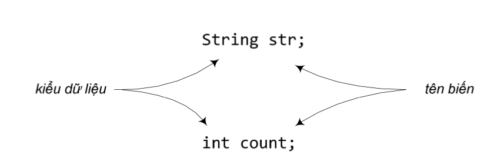

Trước hết, ta bàn về các kiểu dữ liệu cơ bản. Biến thuộc một kiểu dữ liệu cơ bản có kích thước cố định tùy theo đó là kiểu dữ liệu gì (xem Bảng 4.1 liệt kê các kiểu dữ liệu cơ bản của Java).
Bảng 4.1: Các kiểu dữ liệu cơ bản của Java.
Tại mỗi thời điểm, biến đó lưu trữ một giá trị. Khi gán một giá trị khác cho biến đó, giá trị mới sẽ thay thế cho giá trị cũ (bị ghi đè). Ta có thể dùng phép gán để ghi giá trị mới cho một biến theo nhiều cách, trong đó có:
x = 10; isCrazy = true; bloodType = 'A';
x = y;
x = y + 1;
Thông thường, ta không thể ghi một giá trị kích thước lớn vào một biến thuộc kiểu dữ liệu nhỏ. Trình biên dịch sẽ báo lỗi nếu phát hiện ra. Ví dụ:
int x = 10;
byte b = x; // compile error!
Tuy rằng rõ ràng 10 là một giá trị đủ bé để lưu trong một biến kiểu byte, nhưng trình biên dịch không quan tâm đến giá trị, nó chỉ biết rằng ta đang cố lấy nội dung của một biến kiểu int với kích thước lớn hơn để ghi vào một biến kiểu byte với kích thước nhỏ hơn.
Như đã thấy tại các ví dụ trước, biến thuộc các kiểu dữ liệu cơ bản được gọi đến bằngtêncủanó.Vídụsaulệnhkhaibáoint a;tacómộtbiếnkiểuintcótênlàa, mỗikhicầnthaotácvớibiếnnày,tadùngtênađểchỉđịnhbiếnđó,vídụa = 5;. Vậy có những quy tắc gì liên quan đến tên biến?
Định danh (identifier) là thuật ngữ chỉ tên (tên biến, tên hàm, tên lớp...). Java quy định định danh là một chuỗi kí tự viết liền nhau, (bao gồm các chữ cái a..z, A..Z, chữ số 0..9, dấu gạch chân ‘_’). Định danh không được bắt đầu bằng chữ số và không được trùng với các từ khóa (keyword). Từ khóa là từ mang ý nghĩa đặc biệt của ngôn ngữ lập trình, chẳng hạn ta đã gặp các từ khóa của Java như public, static, void, int, byte... Lưu ý, Java phân biệt chữ cái hoa và chữ cái thường.
Cách đặt tên biến tuân thủ theo cách đặt tên định danh. Tên biến nên dễ đọc, và gợi nhớ đến công dụng của biến hay kiểu dữ liệu mà biến sẽ lưu trữ. Ví dụ, nếu cần dùng một biến để lưu số lượng quả táo, ta có thể đặt tên là totalApples. Không nên sử dụng các tên biến chỉ gồm một kí tự và không có ý nghĩa như a hay b. Theo thông lệ, tên lớp bắt đầu bằng một chữ viết hóa (ví dụ String), tên biến bắt đầu bằng chữ viết thường (ví dụ totalApples); ở các tên cấu tạo từ nhiều từ đơn, các từ từ thứ hai trở đi được viết hoa để "tách" nhau.